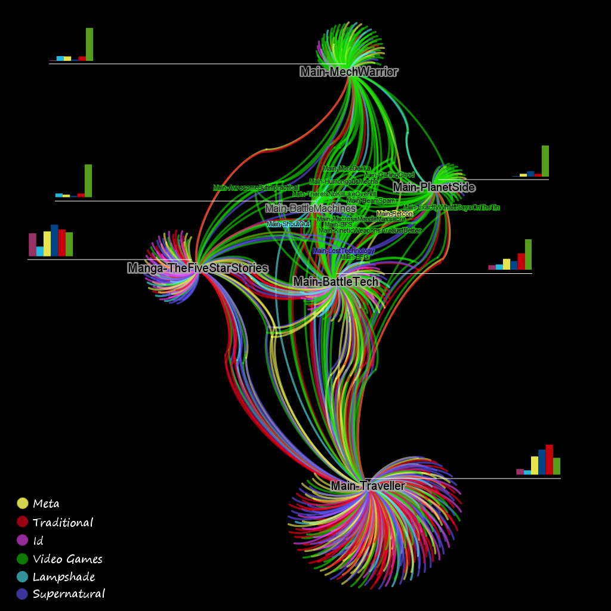

I’ve grown quite familiar with the argument that network visualization, especially the kind of large-scale network visualization that can be popped out almost like an assembly-line product, is pretty but uninstructive. Like anyone who plays with visual representation of data, I’ve retreated into the typical hands-off arguments that, “it’s instructive in its scale” or “yes, but it gives a sense of the complexity of the network” or “it’s to begin interpretation, not to display knowledge.” This is not to say those explanations are untrue or not valuable, but I should push back against casual dismissals of network visualization and network representation. I suppose the reason why is that I settled on an absolutely spectacular set of network visualizations in the previous post. If you look at the networks made up of the various works linked by trope and colored by theme, they’re incredibly informative. I consider myself pretty jaded when it comes to network visualizations, and realize that many get by on their complex appearance and inscrutability, but this is actually incredibly beautiful and incredibly informative:


The colors are described in the previous post, and immediately you can see that there are two categories of color: green and a bunch of colors that aren’t green. These are the rough “themes” of the tropes associated with each work and green represents the “video game” theme, which includes power-ups, missiles, lasers and other things one would see much overlap with wargames. Despite the fact that only two of the works displayed are true video games, we can see some evidence that the themes that define traditional computer and console gaming were well-established by wargames, manga and RPGs. This isn’t news to anyone familiar with the history of gaming, but it’s a hint at the possible value of this dataset for scholarship that looks to explore relationships between divergent media.
But most interesting from a network visualization perspective is that the shared themes of the works are immediately obvious. BattleTech acts as a bridge between a pure, old-school RPG like Traveller and a series of video games focused on piloting fusion-powered giant death machines in a dystopian future. Also interesting are the shared themes between Traveller and The Five Star Stories, which focus on traditional and supernatural themes that, according to the TV Tropes community, are shared in common between these works but not the other four works displayed here. Finally, Battle Machines, which is not very novel even for a game about giant robots, disappears in a mass of shared themes with BattleTech, its obvious inspiration, and the more giant-robot-themed works. That indistinctness is itself a trait, either related to evidence or thematic originality.
Finally, the thematic makeup of the various works highlights the differences between genres. The two video games are heavily made up of video game themes, while the Manga and RPG show an even mix of themes. BattleTech, as a miniatures-based wargame, is more of a video game than an RPG, but in comparison Battle Machines, whether due to the incompleteness of its entry or the modern date of its creation, is more of a video game than MechWarrior.
I tend to avoid this level of analysis in these posts, but find it necessary to emphasize the value of this particular form of data visualization for this kind of dataset. While many of these visualizations are tools to spur interpretation or interfaces to browse the data, those like the one above are self-contained arguments about the structure and makeup of particular objects. This doesn’t mean it’s correct, there are too many issues regarding the “themes” I’ve delineated, the quality of the dataset and the field of games studies that I’m unfamiliar with. But it is clear, and can be defended or attacked in its clarity, which is ultimately the sign of the best data visualizations.
This data was developed during an exploration of the TV Tropes website found here:
Part 1: The Weird Geometry of the Internet
Part 2: Trope (but not Troper) Communities
Part 3: If you liked Dwarf Fortress, you’ll love Twilight: Breaking Dawn